Visualizing YouTube Insights:
Analyzing Top Channels and
Videos
Developed a Python-based YouTube analytics project leveraging the YouTube Data API to retrieve channel statistics, viewership insights, and content details for popular channels, including Netflix, Prime Video, HBOMAX, CrunchyRoll, and Peacock. (Click here to see the code.)
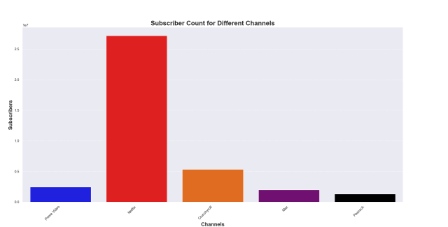
Utilized data visualization libraries such as Seaborn and Matplotlib to generate graphical representations of the top 10 videos by views in Netflix, facilitating data-driven content strategy and channel performance analysis. (Click here to see the code.)
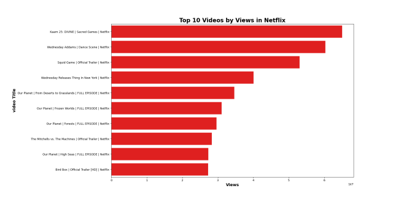
Weather analysis
In this project, the code generates a visual representation of temperature variations throughout the year 2023 in Irving, Texas, ZIP code 75039.
This aids in the analysis and understanding of temperature trends in this specified area during that year. Adjustments to the visual elements, such as colors, label sizes, or plot styles, can be made for better presentation or to meet specific requirements (Click here to see the code.)
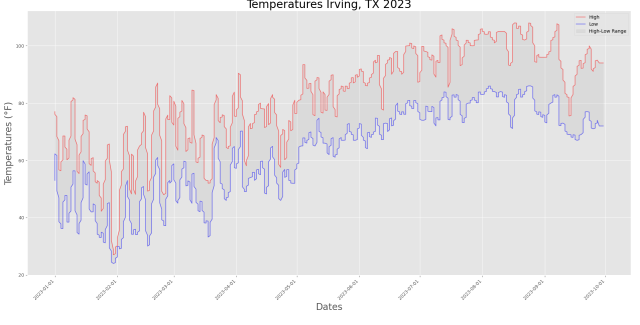
Covid Data Analysis

The project utilized SQL to conduct a comprehensive exploration
of the COVID-19 data stored in the 'CoviData' table.
This series of SQL queries was crafted to extract insights regarding
infection rates, death counts, and vaccination statuses at both
country and continent levels.
The script encompasses a range of analytical
approaches aimed at studying and interpreting the dataset.
Each query contributes unique perspectives to the examination
of COVID-19 data, offering insights into infection rates,
fatalities, and vaccination statuses. These analyses facilitate
a deeper understanding of the pandemic's impact at both
a detailed country level and a broader continental scale,
enabling informed decision-making and strategic planning
based on the available data.
Click here to see the SQL query.
Additionally, the execution involved selecting four specific queries.
A Python script connects to an SQLite database, executes SQL queries
to retrieve and process COVID-19 data, converts the results into
a DataFrame, replaces NULL values, exports the processed data
to an Excel file, and finally closes the database connection.
With the data cleaned and exported in XLSX format, Tableau
was utilized to visualize the data.
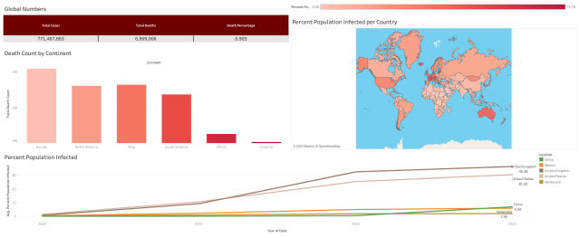
Petrophysics Analysis
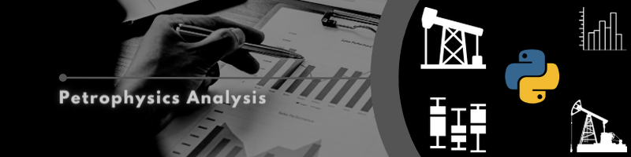
This Python code presents a comprehensive exploration
of Log ASCII Standard (LAS) files commonly used in the Oil
& Gas industry for well log data. The script leverages the
LASIO library to load, explore, and analyze LAS files.
By importing essential libraries such as pandas, matplotlib,
and LASIO, the code examines the LAS file's contents,
reveals well information, generates a general plot,
and exports to a CSV and Excel file format for further
analysis or sharing with other stakeholders.
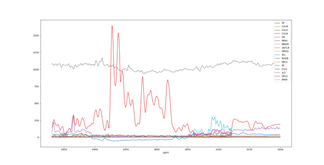

This Python code exemplifies the use of histograms
for analyzing petrophysical data, particularly in
the Oil & Gas industry. Employing the LASIO library,
it reads well log data from an LAS file into a pandas
DataFrame. Through histogram plots, the code explores
the distribution of a Gamma Ray curve ('GR'), providing
insights into the data's spread. It outlines techniques
to refine histograms, such as binning control, edge color
addition, setting axis limits, and statistical insights like mean,
5th and 95th percentiles of the 'GR' curve.
Moreover, the code showcases kernel density estimation alongside
the histogram, offering a clearer representation of data distribution.
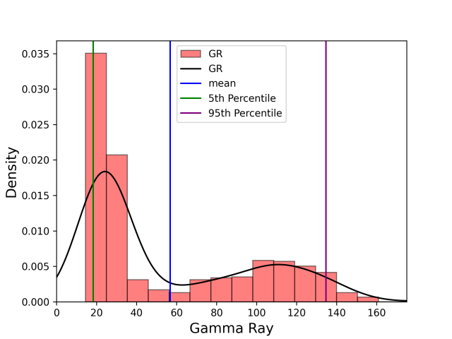
This Python code demonstrates the process of generating scatterplots,
also known as crossplots, using petrophysical well log data.
Leveraging libraries like lasio for loading LAS files and pandas for
data manipulation, these scatterplots serve as invaluable tools in
petrophysical interpretation workflows. The visualizations primarily
focus on illustrating relationships between variables, such as the
neutron porosity and bulk density (RHOB) measurements, aiding in tasks
like lithology identification, outlier detection, hydrocarbon presence
assessment, and rock typing. By tweaking visualization features
including color gradients, axis labels, ranges, and applying a
particular style, the scatterplots offer an enhanced understanding
of the logged intervals, guiding vital interpretations in
subsurface analysis. Moreover, these plots not only
showcase core geological relationships but also reveal
patterns and anomalies crucial for well log interpretation
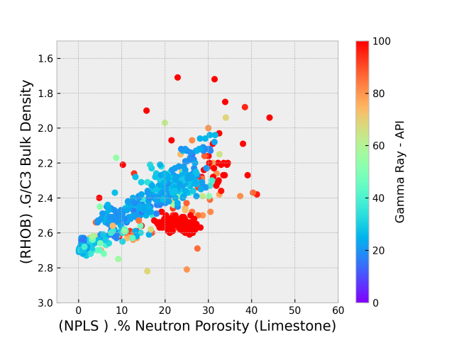
This Python script, leveraging pandas, matplotlib,
and LASIO libraries, offers an insightful visualization
through a series of boxplots derived from a well log data
file. Focusing on critical measurements including Gamma Ray (GR),
Density (RHOB), Deep Induction Resistivity (ILD), and
Neutron Porosity Limestone (NPLS), the code generates four
separate boxplots, each revealing statistical distributions,
median values, outliers, and overall data variability.
Employing red circular markers to highlight outliers,
the plots aid in quick and effective identification of
extremes within the dataset. These visualizations not only
present the variability but also enable a comparative analysis
of the key petrophysical parameters, offering valuable insights
into the characteristics of the logged formations for effective
petrophysical assessments and outlier detection.
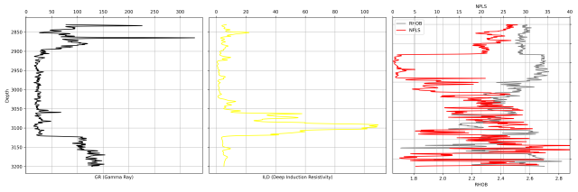
Moreover, by visualizing the Gamma Ray (GR) readings against depth,
the plot distinguishes between sand and shale lithologies through
distinct coloring. Employing yellow for sand and gray for shale,
the fill-between method efficiently identifies lithological
boundaries.
The inverted y-axis reflects increasing depth, and with
the x-axis placed at the top, the plot represents
a conventional well log.
The generated stratigraphic log not only showcases lithological
changes but also provides an intuitive understanding of the rock
composition for effective geologic interpretation.
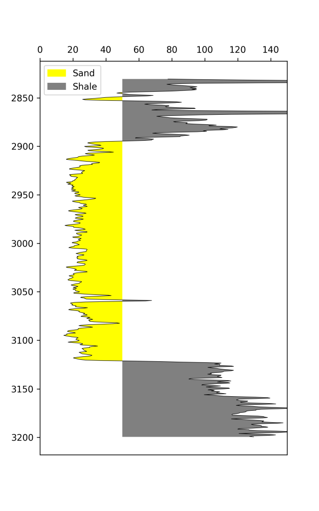
This Python code efficiently utilizes pandas, matplotlib,
and LASIO libraries to generate multiple boxplots representing
key well log measurements from a LAS file. Focused on Gamma Ray
(GR), Density (RHOB), Deep Induction Resistivity (ILD),
and Neutron Porosity Limestone (NPLS) data, each boxplot
reveals statistical distributions, central tendencies,
and outliers present in these critical petrophysical
parameters. Employing techniques to handle missing
values and converting the LAS file into a pandas
DataFrame, these visualizations offer a comprehensive
view of these log data attributes, allowing for quick
identification of outliers and understanding the spread
of values within each log curve. The boxplots' customization
with distinct markers for outliers and features such as notch
markers and mean indicators contributes to a deeper insight into
the variability of the logged formations, aiding in petrophysical
interpretations and outlier detection.
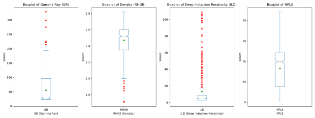
Credit Card Fraud Detection
In this project, I applied machine learning techniques to
detect fraudulent transactions in credit card data.
The dataset, obtained from real credit card transactions,
presented the challenge of imbalanced classes, where
fraudulent transactions were a minority.
To tackle this, I implemented and compared four powerful
algorithms: Logistic Regression, Decision Tree,
Random Forest, and XGBoost.
- Logistic Regression: Achieved an accuracy of 99.94%
and an Area Under the Curve (AUC) of 0.859,
successfully identifying 66 out of 92 fraudulent
transactions.
- Decision Tree Algorithm: Demonstrated high accuracy
at 99.95% with an AUC of 0.908, detecting 75 out
of 92 fraudulent transactions.
- Random Forest Algorithm: Outperformed with an
accuracy of 99.96%, matching the AUC of 0.908
and correctly identifying 75 out of 92 fraudulent
transactions.
- XGBoost Algorithm: Emerged as the most successful
model with an accuracy of 99.97%, an AUC of 0.918,
and identifying 77 out of 92 fraudulent transactions.
The project involved data exploration, visualization,
model training, and evaluation. I employed techniques
to address class imbalance and visualized the models'
performance using ROC curves.
The results were exported to a CSV file for documentation
and presented in a visually appealing plot using ggplot2.
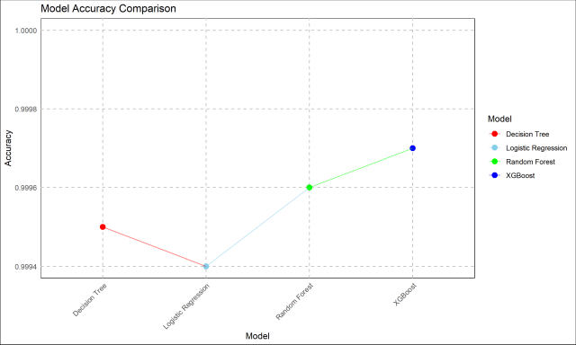
Hence, we can say that XGBOOST Algorithm was successful
in predicting most of the frauds (77/92) with an accuracy
score of 99.97% and AUC of 0.918
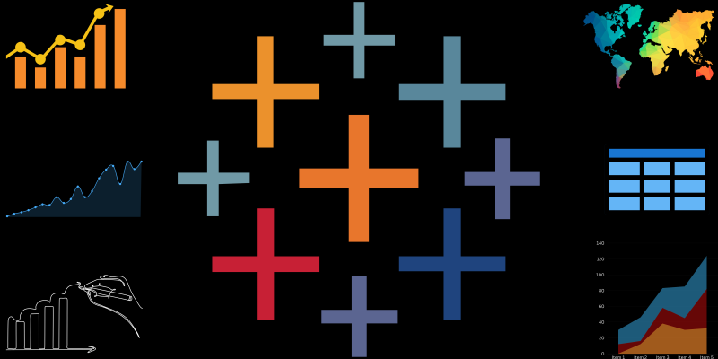
Certificates
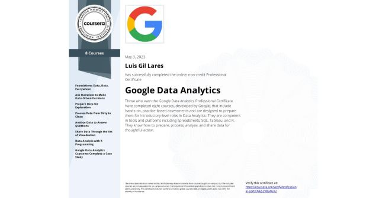